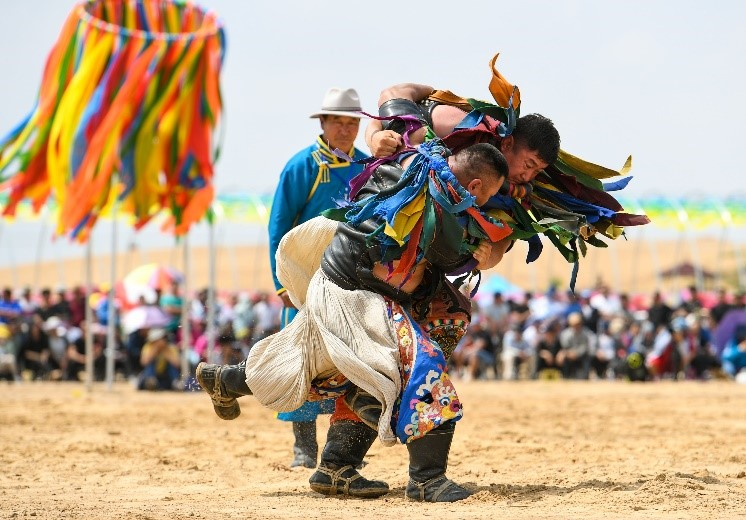
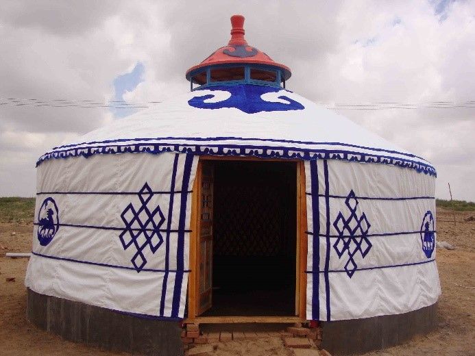
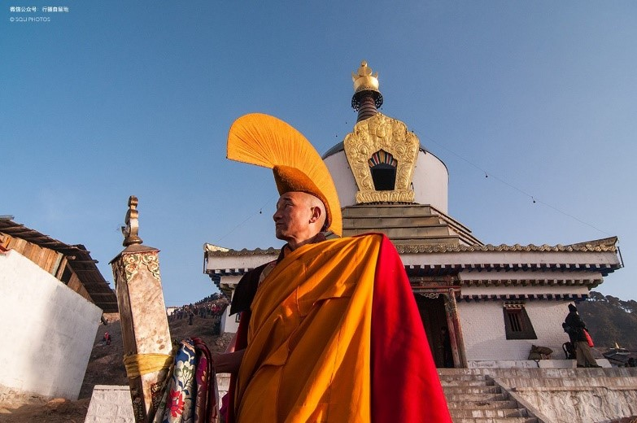

Naadam is one of the most important traditional festivals in Mongolia, usually held in July every year. The name Naadam means "entertainment" or "game", which reflects the joy and competitive spirit of the festival. During the festival, Mongolians gather together to participate in and watch three traditional competitive activities: horse racing, wrestling, and archery. These three sports are known as the "Three Men's Arts" and demonstrate the Mongolians' combination of bravery and skill.
Horse racing is one of the most popular activities in Naadam. The horses are usually young foals, and the riders are mostly children, because they are lighter and can better control the horses. The race distance can be up to 15 to 30 kilometers, testing the speed and endurance of the horses. Before the race, the horses and riders will undergo a blessing ceremony to pray for good luck and safety. After the race, the winning horses and riders will be highly respected and receive generous prizes and honors.
Wrestling plays an important role in Naadam, and most of the participants are Mongolian men who wear traditional wrestling costumes, including tight pants and open tops. There is no time limit for the game until one party throws the opponent to the ground. Before the wrestling game begins, the players will perform a unique dance that imitates the posture of an eagle, which is called the "Eagle Dance" and symbolizes strength and dignity. After the game, the winner will receive cheers and praises from the audience.
Archery competitions require players to shoot at targets within a certain distance. Participants use traditional Mongolian bows and arrows, and the competition is divided into men, women, and children. Archery not only tests the accuracy and strength of the players but also emphasizes concentration and calmness. During the competition, archers and spectators will sing traditional Mongolian ballads, creating a strong cultural atmosphere.
Yurt is the traditional dwelling of Mongolian nomads. It is designed to be easy to disassemble and transport, and to meet the needs of nomadic life. The structure of the yurt is simple and sturdy, usually made of a wooden frame and covered with felt. The center of the yurt is a round wooden frame with an opening at the top, called a "uni", for ventilation and lighting. The outer perimeter of the yurt is covered with thick felt to keep warm during the cold winter. The interior layout usually includes a stove surrounded by sleeping areas and storage spaces for family members. The decoration inside the yurt also has unique cultural symbolism. For example, the furniture and fabrics inside the yurt are often embroidered with traditional Mongolian patterns, which symbolize good luck and protection.
Yurts are not only a residence but also symbolize the core of the family and community. In traditional Mongolian culture, there are specific regulations for the layout and placement of items in the yurt, which reflects the relationship and social status of family members.
Lamaism (Tibetan Buddhism) is the main religion in Mongolia. Since it was introduced to Mongolia in the 16th century, it has had a profound impact. Many Mongolians still follow the teachings and rituals of Lamaism in their lives.
Lamaism was introduced by the Mongolian Khan Altan Khan in the 16th century and quickly became the main religion in Mongolian society. During the spread of Lamaism in Mongolia, it merged with the local shamanism beliefs to form a unique religious culture. Historically, many Mongolian nobles and warriors believed in Lamaism and built a large number of temples and pagodas. Lamaism has had a profound impact on Mongolia's political, cultural, and social life.
Many Mongolian families worship Buddha statues and scriptures at home, pray, and chant every day. Important festivals of Lamaism, such as the White Moon Festival (Tsagaan Sar), are important moments for Mongolians to celebrate the New Year. People will go to temples to pray and hold grand family gatherings. Lamaism monks enjoy a high status in Mongolian society. They are not only responsible for religious rituals but also play an important role in education and cultural inheritance. Many Mongolians invite monks to perform prayer and blessing ceremonies for important events in their lives, such as weddings, funerals, and recovery from illness.